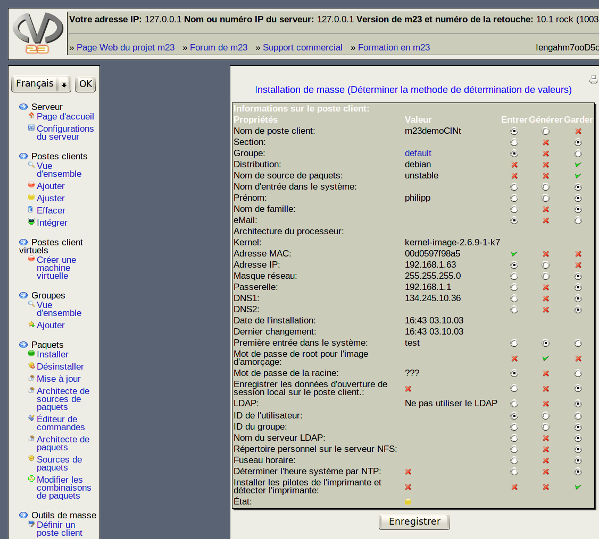

suivant:
Trois méthodes sont possibles:
monter:
Outils de masse
précédent:
Notez
Table des matières
Choisir la méthode de détermination de valeurs

Vous pouvez déterminer la manière dont les valeurs des propriétés des clients doivent être générées.
Sous-sections
Trois méthodes sont possibles:
dodger 2012-12-10